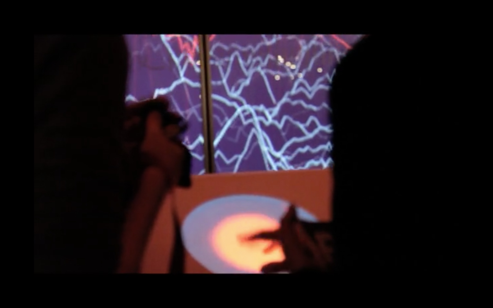
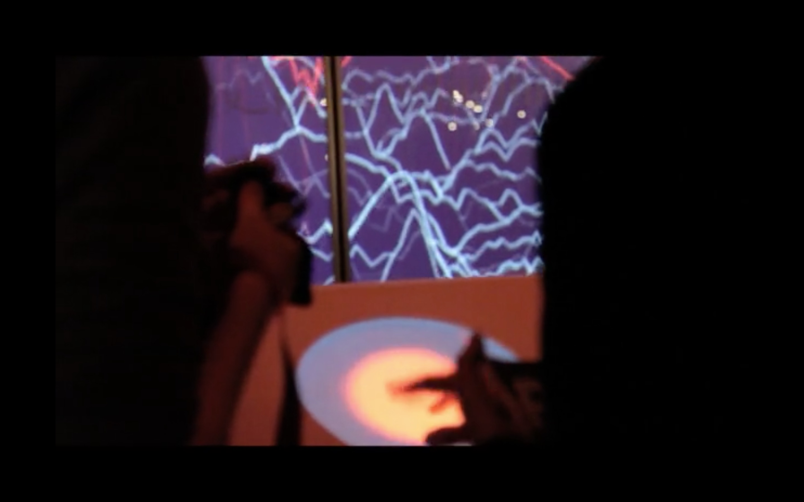

Ziel als Kommunikationsdesigner im Studiengang
Die Änderung der öffentlichen Meinung in Bezug auf KI ist ein entscheidender Schritt zur Verringerung ihrer Gefahren.
Durch die Erstellung neuartiger Werkzeuge und Materialien wie etwa LLM Chatbots, räumlichen Installationen und interaktiven Daten-Visualisierungen, will ich das Bewusstsein der Öffentlichkeit für die Vor- und Nachteile von KI erhöhen.
In Anlehnung an die bahnbrechenden Arbeiten von renommierten Professoren wie Stuart Russell, Max Tegmark und Wendell Wallach
werde ich mich für die Interessen marginalisierter Personengruppen einsetzen,
die von Vorurteilen in Large Language Models und ähnlichen Systemen betroffen sind.
Mein ultimatives Ziel ist es, die Wahrscheinlichkeit zu erhöhen, dass KI auf eine Weise entwickelt wird, die Sicherheit, Ethik und Übereinstimmung mit unseren Werten priorisiert, und somit das Überleben der Menschheit in einer Welt mit exponentiell fähigeren KIs sicherzustellen.
Mit diesem Bestreben möchte ich mich dem Studiengang Design and Computation anschließen.
Kooperation im Studiengang
Um die Risiken, die mit KI verbunden sind, effektiv zu bekämpfen, bedarf es eines vielschichtigen Ansatzes, der Expert:innen aus verschiedenen Disziplinen wie Informatik, Ethik, Philosophie und Politik zusammenführt. Als jemand, der sich mit all diesen Disziplinen auseinandergesetzt hat, bringe ich eine einzigartige Perspektive in diesen Bereich ein. In Zusammenarbeit mit Spezialist:innen unterschiedlicher Fachrichtungen möchte ich dazu beitragen, die Bedeutung der Entwicklung ethischer und sicherheitsrelevanter Standards für KI-Systeme zu vermitteln und sicherzustellen, dass sie auf verantwortungsbewusste und nachhaltige Weise entwickelt werden. Hierbei werde ich meine vielfältigen Fähigkeiten wie Kreativität, technische Expertise und Kommunikationsfähigkeit einsetzen, um diese Herausforderungen zu bewältigen.
Projekte
Hier präsentiere ich eine Auswahl meiner Projekte, die von Interesse im Bezug auf den Design and Computation Studiengang sind. Von der New Practices Site inspiriert, möchte ich diese in vier Kategorien aufteilen: Kunst, Theorie, Technologie und Wissenschaft.
Mein Ziel ist Theorie und Wissenschaft als Grundlage für Design, vor allem im Sinne von guter Kommunikation, zu nutzen — und so Technologie zielgerichtet einzusetzen. Um so wiederum Technologie auf verschiedene Arten zu erfahren und zu hinterfragen.
Meine bisherigen Projekte, sind getrennt in den Kategorien. Im Venn-Diagram ist dargestellt, wie ich die Kategorien zukünftig verbinden möchte.
KUNST Bei meinen bisherigen Projekten habe ich den Design Aspekt, meinem Studium entsprechend, stets als zentrales Element erachtet. Sowohl der freie künstlerische Ausdruck, der im Begriff der Kunst impliziert ist, als auch der eher pragmatische Ansatz, den der deutsche Terminus "Design" verkörpert, haben mich zutiefst fasziniert.
THEORIE Die Beschäftigung mit Theorien jenseits der Ästhetik – wie Philosophie, Soziologie und Wissenschaftstheorie – liegt mir seit langer Zeit. Erst als ich begann, meine Design-Fertigkeiten zur Visualisierung und Darstellung dieser Theorien einzusetzen, wurde mir ihre volle Tragweite bewusst. In einem Projekt, bei dem ich eine visuell experimentelle Darstellung von Karl Marx "Fetischkapitel" entwickelte, konnte ich beispielsweise komplexe philosophische Konzepte auf innovative Weise vermitteln.
TECHNOLOGIE Die vielfältigen Ausdrucksmöglichkeiten digitaler Medien üben eine große Anziehungskraft auf mich aus. Mit Begeisterung erkunde ich die Potenziale von Augmented Reality, Interface Design, Motion Tracking und der Anwendung von Sensortechnologien.
WISSENSCHAFT Seit jeher habe ich mich in Bibliotheken aufgehalten und voller Faszination wissenschaftliche Zeitschriften studiert. Die Entdeckung von Neuem – wie Exoplaneten, Aufnahmen von Schwarzen Löchern oder Higgs-Bosonen – begeistert mich nach wie vor. Oft sind es gerade die heutigen Rechenkapazitäten, die solche Entdeckungen erst ermöglichen, indem sie enorme Datenmengen verarbeiten. In Bezug auf die Wissenschaft sehe ich meine Rolle in der Rezeption, Darstellung und Vermittlung von Erkenntnissen.
Projekt Idee
Ein konkretes Projekt, das Design, Informatik, Kunst und Forschung vereint, könnte ein individualisierbarer AI-Chatbot sein, der die Risiken und Chancen von KI vermittelt.
Als Beispiel könnte ich mich auf die Forschung von Prof. Timnit Gebru und Prof. Kate Crawford stützen, um sicherzustellen, dass die Chatbots aktuell und präzise sind.
In Zusammenarbeit mit Expert:innen der Informatik würde ich meine Programmierkenntnisse nutzen, um benutzerfreundliche und visuell ansprechende Chatbots zu entwickeln, die Informationen über KI-Risiken und bewährte Praktiken bereitstellen.
Ein kleiner Beitrag
Nach Abschluss meines Studiums sehe ich verschiedene vielversprechende Zukunftsszenarien:
Forschung: Die Zusammenarbeit mit Forschungsinstitutionen im Bereich der Integration zukünftiger KI-Systeme in die Gesellschaft, um die Akzeptanz und das Verständnis für diese Technologien zu erhöhen.
Unternehmen: Als Schnittstelle zwischen Design und Technologie möchte ich in Unternehmen tätig werden, die innovative Technologien einsetzen und dabei sowohl auf technische Expertise als auch auf ein tiefes Verständnis für gesellschaftliche Implikationen angewiesen sind.
Start-Up: Die Gründung eines eigenen Unternehmens, das auf den im Studium erworbenen Erkenntnissen basiert und möglicherweise in Zusammenarbeit mit Kommiliton:innen entsteht, um Lösungen für die Herausforderungen der KI-Integration zu entwickeln.
Im Rahmen meines Studiums möchte ich meine Kompetenzen in den Bereichen Design, Technologie, Theorie und Wissenschaft weiterentwickeln und kombinieren. So will ich als multidisziplinärer Designer einen kleinen Beitrag zur Bewältigung der existenziellen Herausforderungen unserer Zeit leisten und würde mich daher sehr über eine Zulassung zum Studiengang Design & Computation freuen. Bei Rückfragen stehe ich gern zur Verfügung.
Ich danke Ihnen für Ihre Berücksichtigung und verbleibe
mit freundlichen Grüßen
Jakob Malek
Hamburg, 01.05.2023


 
